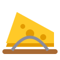

Kleuren
Basis met harde contrasten; elke kleur heeft een donkere schaduwtintSpelers
Elke speler heeft een eigen kleur; bots hebben daarnaast een vorm


Typografie
Fredoka voor koppen en cijfers, Nunito voor tekst (Google Fonts)Tokens
Om na te bouwen in HTML/CSS:root {
--kp-pompoen: #F47B20; --kp-pompoen-d: #C85A0A;
--kp-geel: #FFC928; --kp-geel-d: #E39A00;
--kp-blauw: #2F7DE1; --kp-blauw-d: #1E5BB0;
--kp-groen: #2FAE5B; --kp-rood: #D62839;
--kp-paars: #8E5BD9; --kp-meer: #16457A;
--kp-vilt: #FFF6E6; --kp-zand: #F1E3CC;
--kp-inkt: #2B1D14; --kp-inkt-2: #6B5444;
--kp-font-kop: 'Fredoka', 'Arial Rounded MT Bold', sans-serif;
--kp-font-tekst: 'Nunito', system-ui, sans-serif;
--kp-r-paneel: 28px; --kp-r-knop: 24px; --kp-r-pil: 999px;
--kp-schaduw-paneel: 0 6px 0 rgb(43 29 20 / .16), 0 16px 30px rgb(43 29 20 / .18);
--kp-schaduw-knop: 0 6px 0 var(--kp-pompoen-d), 0 12px 20px rgb(43 29 20 / .18);
--kp-vilt-textuur: url(felt_tex.svg) 0 0 / 240px;
--kp-tik-min: 44px;
}
Knoppen en bediening
Groot, rond en met één tik klaarKnoppen zijn speelgoedblokjes: 3px lichte rand, een harde schaduw van 6px in de donkere tint en een zachte schaduw eronder. Bij een tik zakt de knop 4px (schaduw 6px → 2px). Alles is minimaal 44px hoog; de belangrijkste actie per scherm is groot en oranje.
Panelen en HUD
Ronde-teller, spelerskaart, melding en plaatsen RONDE
RONDE RONDE
RONDE 34
34
 12
12Paneel: vilt crème met een subtiele stoftextuur, 4px witte rand, hoek 20–36px, schaduw 0 6px 0 + 0 16px 30px. De melding na een botbeurt is donker, blokkeert niets en verdwijnt na 2,5 s (gele balk = resterende tijd).
Tekstballonnen
Wit, rond, met naamlabel in de kleur van de spreker
Floris, jij bent! Tik op de dobbelsteen.
Psst… tegen betaling pik ik munten of een ster van een ander.
Vakjes
Eigen kleur en icoon per soortOp het bord liggen de vakjes plat (ovaal door het kantelen) met een dikke donkere onderrand; het icoon is wit en wordt mee platgedrukt. Figuren, ster, gebouwtjes en bomen staan rechtop en worden kleiner naar achteren.
Personages
Pommie en Ratje in vilt-stijl; de spelers zijn jullie eigen tekeningen, onveranderd (bots: placeholders)POMMIE · HOSTFLORIS · HANDGETEKENDSPELER 2 · HANDGETEKENDBOT 1 · PLACEHOLDERBOT 2 · PLACEHOLDERIconen en items
Gevuld, met een donkere onderkant voor diepteMUNTDAGNACHT WINTER
WINTER DOBBELSTEEN 1–10DUBBELE DOBBELSTEEN
DOBBELSTEEN 1–10DUBBELE DOBBELSTEEN
MUIZENVALGOUDEN SLEUTEL